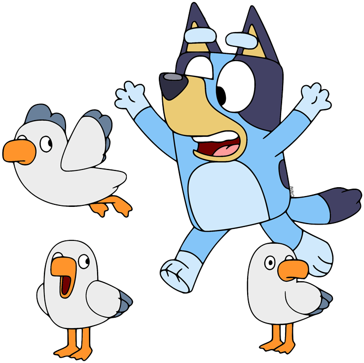

Servicios
Diseño Web
Ofrezco servicios de diseño web modernos, funcionales y adaptados a tus necesidades. Ya sea para una página personal, un portafolio, una tienda en línea o el sitio de tu negocio, creo diseños atractivos y fáciles de usar. Trabajo con HTML, CSS, JavaScript y herramientas responsivas para asegurar que tu sitio se vea excelente en computadoras y móviles.
Maquinas virtuales
Configuro y gestiono máquinas virtuales para diferentes propósitos: pruebas de software, entornos seguros, simulaciones, o servidores privados. Ya sea que necesites una VM en Windows, Linux u otro sistema, te ayudo a instalarla, optimizarla y personalizarla según tu proyecto. Ideal para desarrolladores, empresas o estudiantes.
Gamer
Como gamer experimentado, ofrezco asesoría para mejorar tu rendimiento, configurar tus equipos, montar tu setup y hasta optimizar tus juegos. También puedo ayudarte a elegir componentes para armar tu PC gamer, instalar mods, grabar gameplays o iniciar tu canal de streaming. ¡Lleva tu experiencia de juego al siguiente nivel!
Pseint
Brindo apoyo con PSeInt, una herramienta ideal para aprender lógica de programación. Si estás comenzando en la programación o necesitas resolver ejercicios, puedo ayudarte a crear algoritmos, entender estructuras de control, ciclos, condiciones y más. Te explico paso a paso para que no solo tengas el resultado, sino que también lo comprendas.
Dibujar
Ofrezco dibujos digitales y tradicionales personalizados. Ya sea para retratos, personajes, mascotas, logos o ilustraciones creativas, adapto mi estilo a tus ideas. Puedo trabajar en diferentes técnicas y formatos, ideal para proyectos escolares, redes sociales o regalos especiales. Cada dibujo es hecho con dedicación y detalle.

Chef
Como chef apasionado, ofrezco servicios de cocina personalizada. Preparo menús especiales, platos gourmet, comida casera o temática según tus gustos y necesidades. También doy clases básicas de cocina, asesoría para emprender en gastronomía o ayuda en la organización de eventos pequeños. ¡Cocinar es un arte que comparto con gusto!